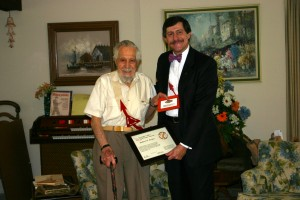

Robert H. Krejci was born at home on Chicago's Westside (2116 S. Trumbull Av.) on June 4, 1913 to John Krejci (08/03/1886 – ?) and Johanna Tischer (03/03/1887 – 06/14/1971). Bob attended the Herbert Spencer Grammar School, graduating from 8th grade in 1927. He then went on to attend and graduate from Austin High School in 1931. He completed his course of study at Michigan State College graduating with Honors in 1941.
Bob joined Boy Scout Troop 390 in the Westside District in 1925 at age 12. The troop was sponsored by Trinity Presbyterian Church and was originally organized in 1916. Bob remembers well his Scoutmaster Louis Adamson who welcomed him warmly. Because of his absentee father, Bob's mother had all she could do to make ends meet for the family, thus Bob was not able to attend Owasippe until 1928. Of the five years at Owasippe as a Scout, Bob received camper scholarships from the Chicago Council for three of those years.
Bob seized the opportunity for individual leadership and climbed the trail to Eagle Scout, receiving his badge in November 1930 and being named Chicago Council's "Eagle Scout of the Year".